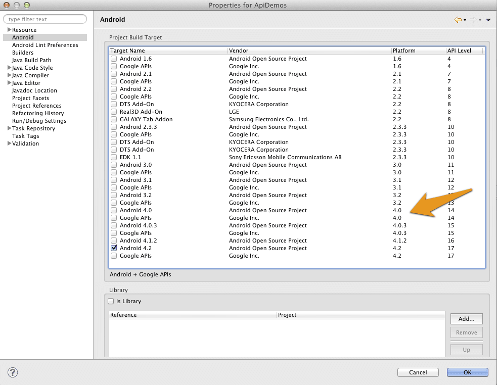

Examples
The following examples should give you an overview of the capabilities offered by the Wikitude SDK. Each sample is capable of running without modifications on all supported platforms.
Each of the included examples is structured as following:
index.html: entry point for the experiencejs/*: includes the necessary JavaScript filescss/*: css style sheets requiredassets/*: contains images, 3D models and tracker files
Inside the js/ folder the main JavaScript file is named like the example. (the example Image Recognition has its JavaScript code in the js/imagerecognition.js file). Code which is mentioned in the description of the examples can be found in this file, if not explicitly stated otherwise.
Samples on GitHub
If you are just interested in browsing through the code of the augmented reality experience you can also find the entire source code of the samples on GitHub### Android SDK Examples
This section describes the SDK Sample project in detail and highlights the main features and use-cases of the Wikitude SDK.
The project is part of the SDK bundle and is an Android Eclipse project, ready to run on any of the supported Android devices.
Note: You cannot run Wikitude SDK project on Android Emulator due to OpenGL restrictions.
Run through the setup guide, install the sample project on your device and scroll through the sample list.
The project's asset folder contains implementation of the various ARchitect World's.
Implementation of the native Android activities is available in the src folder.
Setup
- Download latest Android SDK
- Launch ADT, which is part of the Android SDK or Eclipse with installed Android Plugin
- From the main menu bar, select
File->Import…which will open the import wizard. - Select
General->Existing Project into Workspaceand clickNext. - Choose
Select root directory, clickBrowse - Navigate to the
SDKExamplesproject folder in your filesystem. - Click
Finishto start the import. - Right click the project folder, click
PreferencesandAndroid Ensure you have very latest SDK (14+) checked in the Build Target list

Use an Android device that has all hard- and software requirements (should be similar to Samsung Galaxy S2) and enable your location services in system settings
- Enter
Settings->Applications->Developer-> checkUSB debugging - Plug in the device via USB.
- Right click the project folder again select
Run as…-Android Applicationand select the target device - The sample application is then installed onto your device
Native/JavaScript Communication
The samples mainly describe how to launch an AR experience in your Android activity - anything relevant for AR is written in the provided HTML/JS file.
Although it is highly recommended to implement logic in pure HTML and JavaScript at some point in time it makes sense to interact between native Android and the JavaScript of your AR experience.
One may for instance pass data for points of interest (POI) from native Android to JavaScript.
Define a method named newData(json) in the JavaScript file and use architectView.callJavascript(newData('" + poiDataAsJson +")') to call the method and pass over the values properly. JSON Format is the fastest way to pass bulk of information, like translations, metadata and POI information over to your JavaScript.
There are several ways to create a JSON in Android.
Sometimes events like a click in your AR experience should cause a reaction in native Android, like launching another screen when clicking a placemark or image target. To achieve that you need to register a urlListener using architectView.registerUrlListener() in the activity.
Any document.location changes to architectsdk:// will fire an event in your listener (e.g. document.location = architectsdk://YOUR-INFO). Listener is informed about the invoked url and can then react on.
Note: Missing urlListener registration will cause an HTTP error when calling document.location = architectsdk://YOUR-INFO